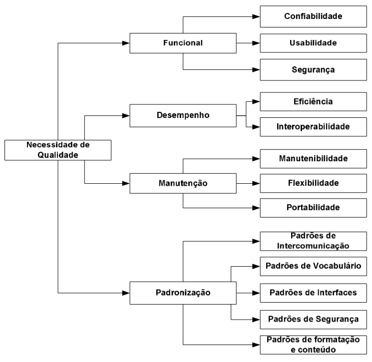

Quality attributes Scenarios Essentials - QaSE
1. Introdução
Os quality scenarios são uma técnica de modelagem elaborada com base nas adaptações dos cenários propostos por [Robertson, 2006] e das práticas descritas no EssUP (Essentials Unified Process) por [Jacobson, 2010].
Os quality scenarios compõem a prática Quality attributes Scenarios Essentials e, serão propostos com intuito de padronizar a elaboração dos cenários, possibilitando melhor compreensão dos requisitos não-funcionais elicitados junto ao stakeholder. Eles são uma técnica de modelagem dos Non Functional Requirements (NFR) que abordam e descrevem os requisitos, relatam as interdependências e conflitos existentes entre os requisitos não-funcionais, os possíveis impactos que podem vir a afetar o sistema caso ocorra o não atendimento dos requisitos.
Dessa forma, será possível implementar o sistema tendo conhecimento de cada NFR, de cada dependência e/ou conflito, possibilitando a elaboração de soluções mais eficazes para o problema existente em uma organização.
2. Metodologia
Essa prática refere-se à utilização de modelos para facilitar a compreensão de requisitos não-funcionais, produzindo uma documentação útil para o desenvolvimento de software, conduzindo as atividades de desenvolvimento para:
- Elicitar e priorizar os requisitos não-funcionais;
- Informar os requisitos e o comportamento do sistema ao realizar ações e serviços;
- Enxergar as interdependências e conflitos entre os requisitos e entender como eles estão relacionados um ao outro;
- Empregar o modelo correto para a modelagem de NFR, a fim de atender às necessidades;
- Ser ágil em sua abordagem para modelagem e documentação.
Para facilitar o processo de elicitação destes requisitos não funcionais, a partir da técnica proposta, usou-se de base um padrão organizacional proposto por [Loucopoulos, 1995]. O capítulo seguinte tem o objetivo de descrever o padrão citado.
3. Solução Proposta
Foi proposto um modelo genérico de divisão contextual para qualidade do software, a partir do qual os requisitos não funcionais podem ser decompostos. Este modelo foi originado a partir das necessidades de qualidade de software descritas por [Loucopoulos, 1995] e, confere uma adaptação para o uso do mesmo. A figura a seguir ilustra o modelo:

Figura 1: Modelo necessidades de qualidade de software
Fonte: [Bastos Filho, 2010]
4. Aplicação do método
Esta seção será dividida conforme as camadas da árvore de modelo apresentada acima, ou seja, dividiu-se entre os contextos e gerou-se os requisitos não funcionais.
4.1. Funcional
Os artefatos a seguir compõem o contexto Funcional da modelagem de requisitos não funcionais:
| Tipo | Contexto | Descrição | Pré-Condição | Pós-Condição | Impactos Positivos | Impactos Negativos |
|---|---|---|---|---|---|---|
| Funcional | Confiabilidade | O sistema deve executar suas funções dentro dos limites e condições operacionais que sua infraestrutura comportam. | Definição da infraestrutura. | Testes de usabilidade com métricas. | O sistema será capaz de executar as funcionalidade incorporadas mesmo que em condições extremas de uso simultâneo. | O sistema perderá confiança do usuário, uma vez que não conseguirá entregar as expectativas de uso. |
| Funcional | Usabilidade | O sistema deve fazer com que o usuário tenha sucesso na execução de suas tarefas. Fácil aprendizagem, utilização eficiente e gestão de erros são pontos fundamentais para que o usuário perceba a boa usabilidade. | Definição de intercomunicações, vocabulário, interfaces e guia de instruções. | Deve haver local para colheita de feedbacks dos usuários. | O usuário terá extrema facilidade em utilizar o serviços, assim como participar ativamente no desenvolvimento da aplicação. | O usuário se frustará ao desempenhar ações, da mesma forma que ocorrerá perda da aderença e o insucesso do aplicativo. |
| Funcional | Segurança | Mapear vulnerabilidades de hardware e software; Efetuar backups de dados preventivos; Redundância de sistemas; Controle de acesso à plataforma; Firewall; Assinatura digital; Biometria; Política de segurança da informação. | Definição de padrões de segurança. | O sistema deve honrar com as premissas de interoperabilidade, usabilidade, confiabilidade e os padrões definidos. | Ambiente seguro, com dados protegidos, sem exposição de informações sensíveis quanto controle auditável de ações da plataforma. | Vazamento de dados, ataques cibernéticos, exposição de de regras de negócio tão quanto dados sensíveis de usuários da plataforma. |
Tabela 1: Modelo de requisitos não funcionais contexto Funcional
4.2. Desempenho
Os artefatos a seguir compõem o contexto Desempenho da modelagem de requisitos não funcionais:
| Tipo | Contexto | Descrição | Pré-Condição | Pós-Condição | Impactos Positivos | Impactos Negativos |
|---|---|---|---|---|---|---|
| Desempenho | Eficiência | O sistema é capaz de receber dados assim como processá-los de forma pragmática, entregando os resultados para o usuário conforme segue a proposta da aplcação. | Definição das regras de negócio que serão aplicadas; Critérios de aceite bem definidos. | O usuário deve ser requerido assim como informado sobre as ações e procedimentos que ocorrerão na aplicação. | A aplicação será transparente e acertiva quanto sua proposta. | Não cumprimento das proposta da aplicação. |
| Desempenho | Interoperabilidade | Traduz-se na capacidade que o sistema tem de operar em conjunto com outros sistemas, sem que isso gere uma dependência entre os mesmos. | Mapeamento de operações do sistema a fim de identificar os sistemas correlatos que compôem o processo. | Identificação do fluxo de operações entre os sistemas, bem como os fluxos de informações entre os mesmos. | Mapa de fluxos são fundamentais na compreensão do funcionamento do sistema e, também auxiliam nas estratégias de desenvolvimento. | Desorganização, inacessibilidade de informações cruciais sobre o sistema. |
Tabela 2: Modelo de requisitos não funcionais contexto Desempenho
4.3. Manutenção
Os artefatos a seguir compõem o contexto Manutenção da modelagem de requisitos não funcionais:
| Tipo | Contexto | Descrição | Pré-Condição | Pós-Condição | Impactos Positivos | Impactos Negativos |
|---|---|---|---|---|---|---|
| Manutenção | Manutenabilidade | Facilidade e rapidez com que um sistema ou equipamento pode ser restaurado ao estado operacional após uma falha. | Mapeamento de infraestrutura e operações; | Plano de restauração da aplicação; | Prevenção contra desastres, ataques cibernéticos e/ou falhas na estrutura da aplicação. | Corrupção do sistema, falhas graves, perda de dados. |
| Manutenção | Flexibilidade | Diz respeito a modularidade que o sistema foi estruturado. Deve-se assegurar que o sistema é capaz de incorporar novas funcionalidade assim como remove-las sem que haja um prejuízo ao serviço final. | Plano arquitetural modular. | Mapeamento de relações entre componentes e funcionalidades. | Aumento da produção no ciclo de desenvolvimento e entrega de novas funcionalidades. | Falha na incorporação de novos módulos; Crescente de erros na aplicação. |
| Manutenção | Portabilidade | Definido como a facilidade na qual o software pode ser transferido de um sistema ou ambiente para outro. | Pipelines de desenvolvimento e integração contínua bem estabelecidos; Infraestrutura para abrigar a aplicação. | Funcionamento correto da arquitetura da aplicação. | Ausência de dependência estrutural e de hospedagem; | Ineficiência na gestão de custos; Falta de redundância ao entregar o serviço; Exposto a falhas de caráter inoperante. |
Tabela 3: Modelo de requisitos não funcionais contexto Manutenção
4.4. Padronização
Os artefatos a seguir compõem o contexto Padronização da modelagem de requisitos não funcionais:
| Tipo | Contexto | Descrição | Pré-Condição | Pós-Condição | Impactos Positivos | Impactos Negativos |
|---|---|---|---|---|---|---|
| Padronização | Intercomunicação | Pauta-se na capacidade que o sistema tem que interagir com os mais diversos dispositivos disponíveis para que seus usuários possam usar. | A infraestrutura deve ser capaz de executar sua aplicação em diversos tipos de dispositivos; Mapeamento de prováveis dispositivos usados pelo seu público alvo | Checklist de status de ações comuns, realizadas em todos os dispositivos. | Portabilidade assegurada entre os mais diversos consumidores da aplicação. | Imposição de tecnologias para se usar os serviços; Não privilegia à acessibilidade. |
| Padronização | Vocabulário | Deve ser definido, com base nos léxicos, o estilo de vocabulário a ser utilizado. | Léxicos. | Uso dos termos apropriados, privilegiando acessibilidade dos consumidores. | Maior difusão e compreensão dos serviços oferecidos. | Inacessibilidade dos usuários. |
| Padronização | Interfaces | A interface entre o software e o usuário, é a tela de comandos apresentada pela aplicação, ou seja, a interface gráfica do software. | Protótipos de tela em baixa, média e alta fidelidade, sendo desenvolvidos e atualizados por todo o processo de contrução do sistema; Devem atender a expectativa de visual e componentes que tornem possível a interação com a solução. | Verificação do cumprimento das expectativas do artefato. | Planejamento e acertividade quanto a facilidade de interação do usuário. | Em omissão, não permite que o usuário faça qualquer interação que seja com o sistema. |
| Padronização | Segurança | Documento de normativas de segurança, definem políticas de uso, desenvolvimento, armazenamento de informação e protocolos de acesso ao sistema da aplicação. | Devem ser feitas provas de conceito; Estudo de vulnerabilidades; Mapa de fragilidades; Priorização no ciclo de desenvolvimento. | Verificação de cumprimento das expectativas e normas definidas nos documentos de políticas. | Pragmatização de protocolos; Maior controle e auditoria da aplicação; Prevenção contra vazamento de dados sensíveis; Maior manutenabilidade do sistema. | Exposição desnecessária de informações; Coloca em risco as operações do sistema; Perda de controle da aplicação; Corrupção do sistema. |
| Padronização | Formatação e Conteúdo | Definem padrões de comunicação, seja escrita ou verbal. | Léxicos; Protótipos visuais. | Devem atender à normativas de acessibilidade; | Melhor interação com o usuário; Posicionamento respeitoso de marca; Maior engajamento nas aplicações por parte do usuário. | Falta de engajamento; Obsolência da aplicação; Descontentamento do usuário. |
Tabela 4: Modelo de requisitos não funcionais contexto Padronização
5. Referências Bibliográficas
[Robertson, 2006] ROBERTSON, Suzanne; ROBERTSON, James. Customer Satisfaction/dissatisfaction – Mastering the Requirements Process (Volere). 2ª ed, 2006.
[Jacobson, 2010] JACOBSON, Ivar. Essential Practices – The Smart Way. Disponível em: http://www.ivarjacobson.com/resource.aspx?id=408. Acessado em: 08/09/2022.
[Sales de Brito, 2010] SALES DE BRITO, Rebeka. Uma Proposta para Modelagem de Requisitos Não-Funcionais em Projetos Ágeis. Disponível em: https://repositorio.ufpe.br/bitstream/123456789/2394/1/arquivo3221_1.pdf. Acessado em: 08/09/2022.
[Bastos Filho, 2010] BASTOS FILHO, Francisco de Assis Menêzes. ELICITAÇÃO DE REQUISITOS NÃO FUNCIONAIS EM CONFORMIDADE COM POLÍTICAS DE QUALIDADE PARA APLICAÇÕES MÉDICAS. Disponível em: https://tedebc.ufma.br/jspui/bitstream/tede/438/1/Francisco%20de%20Assis.pdf. Acessado em: 08/09/2022.
6. Histórico de Versão
| Versão | Data | Descrição | Autor | Revisor |
|---|---|---|---|---|
| 0.1 | 08/09/2022 | Criação do documento | Paulo | Alex |